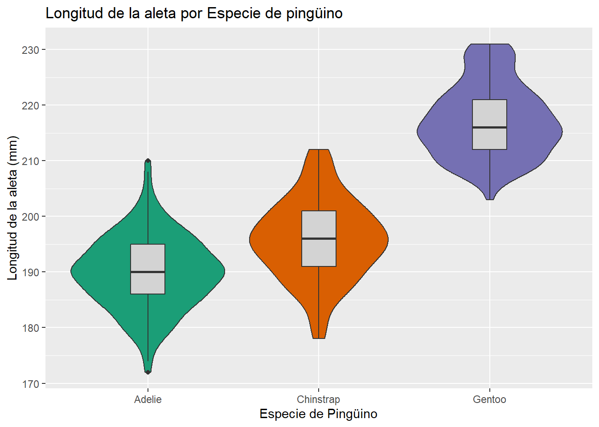
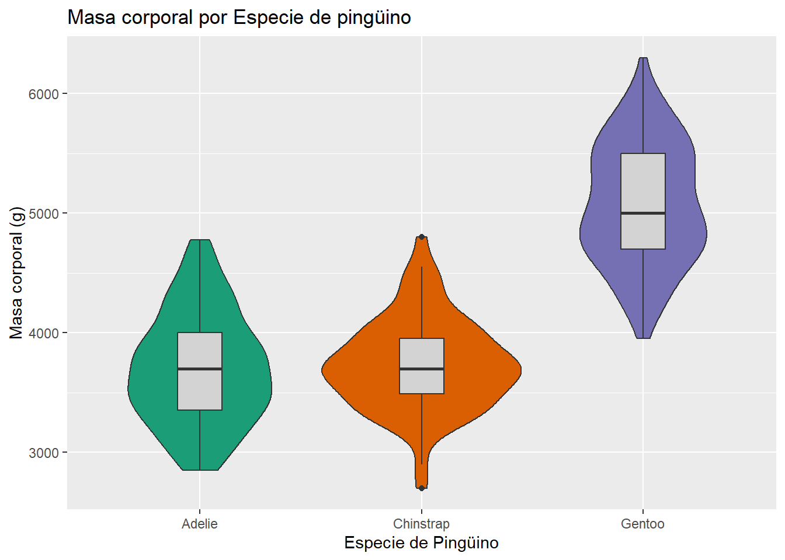
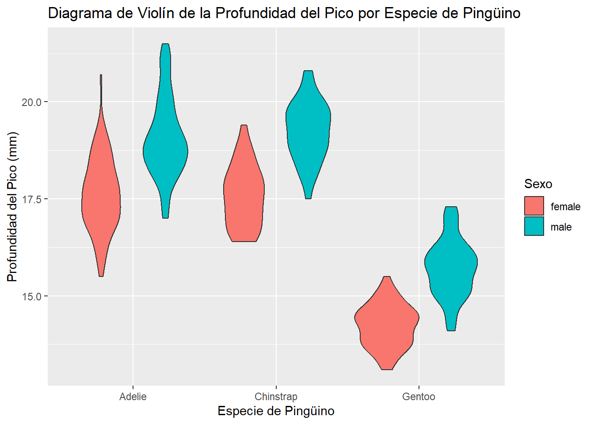
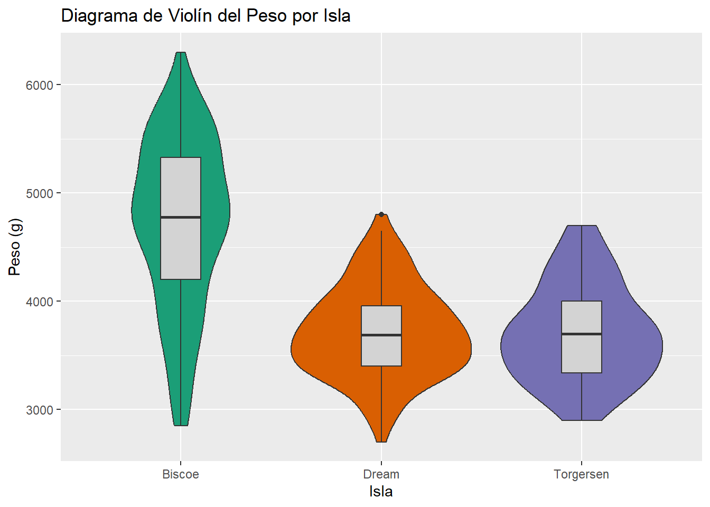
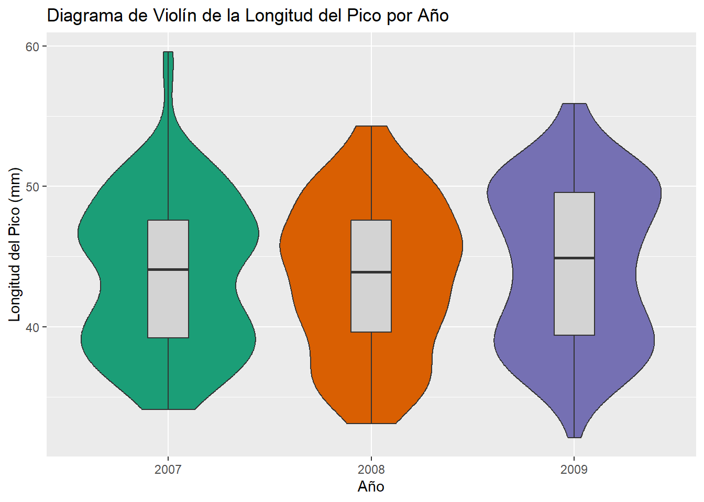
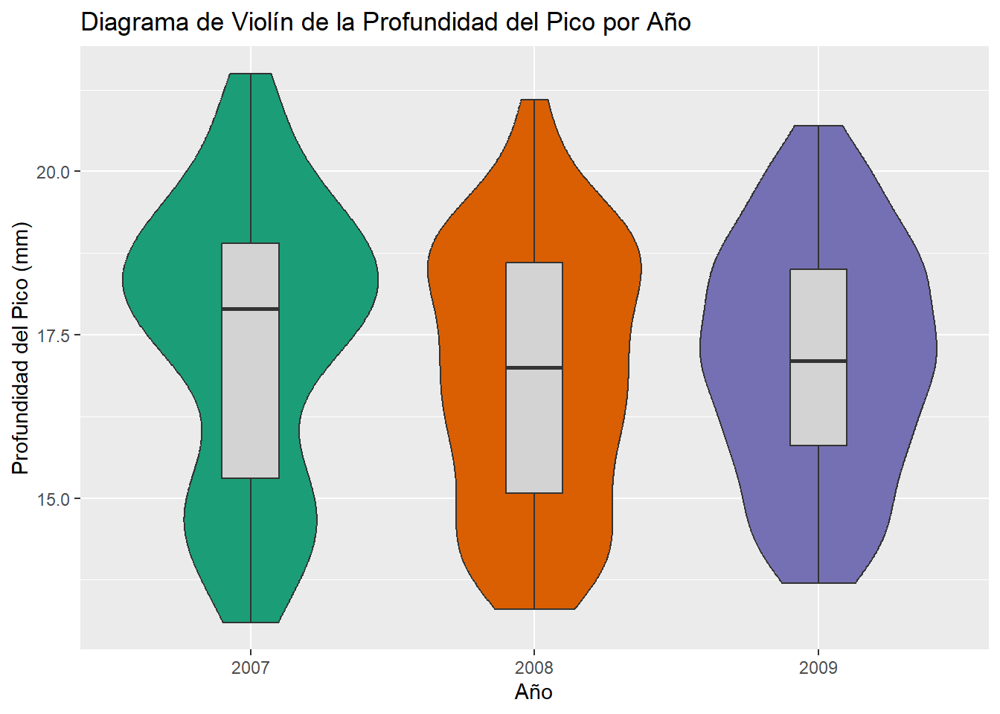
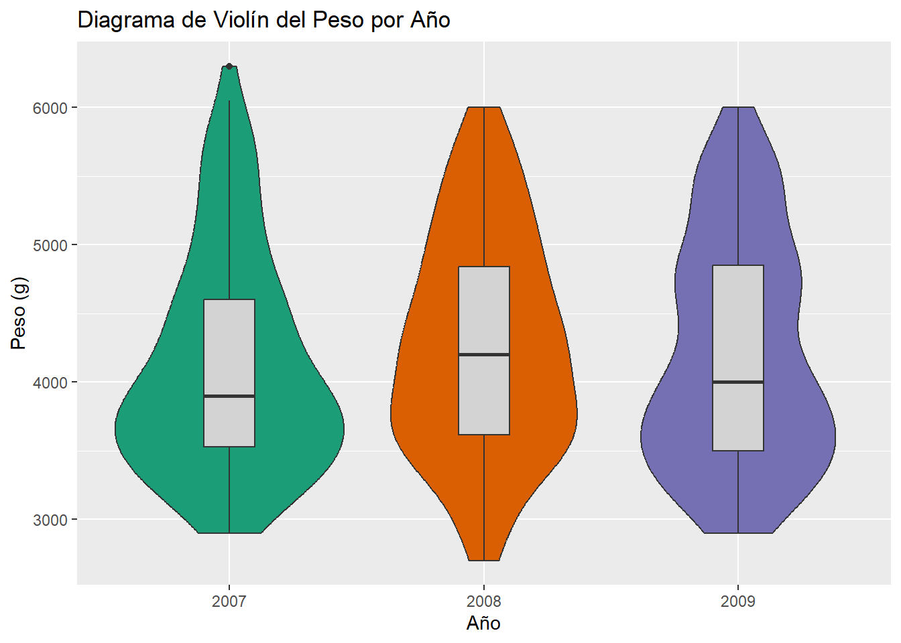

install.packages("palmerpenguins")
install.packages("ggplot2")
install.packages("corrplot")
install.packages("tidyr")Entrega 1
Instalamos los paquetes que vamos a necesitar:
Exploración inicial y descripción de variables.
En primer lugar, visualizaremos el conjunto de datos.
library(palmerpenguins)
penguins %>% strtibble [344 × 8] (S3: tbl_df/tbl/data.frame)
$ species : Factor w/ 3 levels "Adelie","Chinstrap",..: 1 1 1 1 1 1 1 1 1 1 ...
$ island : Factor w/ 3 levels "Biscoe","Dream",..: 3 3 3 3 3 3 3 3 3 3 ...
$ bill_length_mm : num [1:344] 39.1 39.5 40.3 NA 36.7 39.3 38.9 39.2 34.1 42 ...
$ bill_depth_mm : num [1:344] 18.7 17.4 18 NA 19.3 20.6 17.8 19.6 18.1 20.2 ...
$ flipper_length_mm: int [1:344] 181 186 195 NA 193 190 181 195 193 190 ...
$ body_mass_g : int [1:344] 3750 3800 3250 NA 3450 3650 3625 4675 3475 4250 ...
$ sex : Factor w/ 2 levels "female","male": 2 1 1 NA 1 2 1 2 NA NA ...
$ year : int [1:344] 2007 2007 2007 2007 2007 2007 2007 2007 2007 2007 ...El estudio se realizó escogiendo datos de tres especies distintas de pingüino en tres islas distintas del archipiélago Palmer, en la Antártida. Por tanto, la unidad muestral de la tabla es un pingüino.
Hay 344 observaciones de 8 variables, que son, por orden de aparición en el código anterior:
Especie
Esta variable registra la especie del ejemplar. Es cualitativa nominal politómica.
Hemos visto ya en la descripción del tibble que hay tres especies de pingüino. Para ver qué especies son y cuántos ejemplares hay de cada una, utilizamos el siguiente codigo:
x=table(penguins$species)
c(x,"NA's"=sum(is.na(penguins$species))) Adelie Chinstrap Gentoo NA's
152 68 124 0 Por tanto, de más a menos común, hay pingüinos de las especies Adelie, Gentoo y Chinstrap. No hay pingüinos sin clasificar por su especie.
Isla
Esta variable registra la isla en la que fue encontrado el ejemplar. Es cualitativa nominal politómica.
x=table(penguins$island)
c(x,"NA's"=sum(is.na(x))) Biscoe Dream Torgersen NA's
168 124 52 0 De más a menos cantidad, hay pingüinos en las islas Biscoe, Dream y Torgersen. Tampoco hay ejemplares sin isla registrada.
Longitud del pico
Tanto esta variable como la siguiente en la lista se explican de manera sencilla con la siguiente ilustración:

Es cuantitativa continua, está expresada en milímetros y discretizada a las décimas (\(10^{-4}\) metros).
Veamos los estadísticos más comunes de esta variable:
Min. 1st Qu. Median Mean 3rd Qu. Max. NA's
32.10 39.23 44.45 43.92 48.50 59.60 2 El pico más corto mide 32.1 milímetros, y el más largo, 59.6. El primer cuartil de esta variable es 39.225, la mediana 44.45 y el tercero 48.5. La media es de 43.9219298 y la desviación típica muestral de 5.4595837. Además, hay 2 valores NA.
Profundidad del pico
Es cuantitativa continua, está expresada en milímetros y discretizada a las décimas (\(10^{-4}\) metros).
Min. 1st Qu. Median Mean 3rd Qu. Max. NA's
13.10 15.60 17.30 17.15 18.70 21.50 2 El pico más fino mide 13.1 milímetros, y el más grueso, 21.5. El primer cuartil de esta variable es 15.6, la mediana 17.3 y el tercero 18.7. La media es de 17.1511696 y la desviación típica muestral de 5.4595837. Además, hay 2 valores NA.
Longitud de la aleta
El nombre de la variable explica claramente qué representa. Es cuantitativa continua, está expresada en milímetros y discretizada a las unidades (\(10^{-3}\) metros).
Min. 1st Qu. Median Mean 3rd Qu. Max. NA's
172.0 190.0 197.0 200.9 213.0 231.0 2 La aleta más corta mide 172 milímetros, y la más larga, 231. El primer cuartil de esta variable es 190, la mediana 197 y el tercero 213. La media es de 200.9152047 y la desviación típica muestral de 5.4595837. Además, hay 2 valores NA.
Peso
Es cuantitativa continua, está expresada en gramos y discretizada a los múltiplos de 5 gramos. Para ver que, efectivamente, esa es la discretización, hemos utilizado el siguiente código:
pesos=na.omit(penguins$body_mass_g)
sum(pesos%%5)[1] 0Deducimos que no hay ningún dato que no sea múltiplo de 5 (si hubiese alguno, la suma sería \(>0\)).
Ahora veamos algunos estadísticos de esta variable:
Min. 1st Qu. Median Mean 3rd Qu. Max. NA's
2700 3550 4050 4202 4750 6300 2 El pingüino más liviano pesa 2700 gramos, y el más pesado, 6300. El primer cuartil de esta variable es 3550, la mediana 4050 y el tercero 4750. La media es de 4201.754386 y la desviación típica muestral de 5.4595837. Además, hay 2 valores NA.
Sexo
Registra si el pingüino es macho o hembra, salvo en algunos casos en los que no se determinó. Es cualitativa nominal dicotómica.
x=table(penguins$sex)
c(x,"NA's"=sum(is.na(penguins$sex)))female male NA's
165 168 11 Año
El año en el que se realizó el registro del pingüino. Esta variable es ordinal, pero R asigna a esta variable el tipo int, pues sus valores son números enteros. En realidad se trata de un factor ordenado. Podemos arreglar esto con el siguiente código:
penguins$year=factor(penguins$year, ordered=TRUE)
penguins %>% strtibble [344 × 8] (S3: tbl_df/tbl/data.frame)
$ species : Factor w/ 3 levels "Adelie","Chinstrap",..: 1 1 1 1 1 1 1 1 1 1 ...
$ island : Factor w/ 3 levels "Biscoe","Dream",..: 3 3 3 3 3 3 3 3 3 3 ...
$ bill_length_mm : num [1:344] 39.1 39.5 40.3 NA 36.7 39.3 38.9 39.2 34.1 42 ...
$ bill_depth_mm : num [1:344] 18.7 17.4 18 NA 19.3 20.6 17.8 19.6 18.1 20.2 ...
$ flipper_length_mm: int [1:344] 181 186 195 NA 193 190 181 195 193 190 ...
$ body_mass_g : int [1:344] 3750 3800 3250 NA 3450 3650 3625 4675 3475 4250 ...
$ sex : Factor w/ 2 levels "female","male": 2 1 1 NA 1 2 1 2 NA NA ...
$ year : Ord.factor w/ 3 levels "2007"<"2008"<..: 1 1 1 1 1 1 1 1 1 1 ...Ahora sí tiene el tipo adecuado.
x=table(penguins$year)
c(x,"NA's"=sum(is.na(penguins$year)))2007 2008 2009 NA's
110 114 120 0 Se ha tomado, aproximadamente, el mismo número de muestras en cada año.
Una vez discutidas individualmente las variables, estudiaremos algunos datos demográficos, como la distribución de sexo por especie y de especie por isla:
Datos demográficos
Es sensato comprobar qué relación hay entre el sexo y las demás variables cualitativas (¿El año o la isla están sesgados por el sexo? ¿Las especies presentan una distribución 50/50 de machos y hembras?), pero por brevedad nos limitaremos a relacionarlo con la especie.
En los gráficos de abajo se puede apreciar la proporción de pinguinos de las distintas especies en cada isla:

Vemos que en cada especie hay prácticamente la misma cantidad de machos que de hembras.
Distribución de pingüinos según la isla

Vemos que la especie Gentoo se encuentra únicamente en la isla Biscoe y Chinstrap está solo en Dream. Por otra parte, Adelie se puede encontrar en las tres islas.
Se puede observar que en función de la isla que tratemos, habitan pingüinos de una especie u otra:
En la isla de Biscoe habitan todos los pingüinos de la especie Gentoo y también hay algunos de la especie Adelie, pero no hay de la especie Chinstrap.
En la isla de Dream cohabitan pingüinos de las especies Adelie y Chinstrap, y es la isla en la que habitan todos los pingüinos de esta última especie.
Finalmente, en la isla de Torgersen solo habitan pingüinos de la especie Adelie.
Esta distribución tan heterogénea de los pingüinos por isla nos indica que, muy posiblemente, las conclusiones que podamos extraer a partir de cómo se relaciona la isla con las demás variables sea similar a las que se puedan extraer a partir de cómo se relacionan con la especie, pues está muy sesgada por esta última.
Una vez visualizados algunos datos demográficos, estudiaremos cómo se relacionan las variables cuantitativas entre ellas y con las demás.
Variables cuantitativas por especie
En primer lugar, consideramos que puede ser interesante comparar las distintas medidas de los pingüinos entre especies. Para esto, primero visualizamos individualmente cada variable.
Comparación una a una
Para realizar esta comparación, utilizaremos una gráfica de violín para cada una de las variables cualitativas.




En estos gráficos observamos un patrón común: Para cada medida, dos especies de pingüino suelen tener una distribución parecida, y la tercera es visiblemente distinta. Concretamente:
- Los pingüinos Adelie son, con diferencia, los que tienen el pico más corto.
- Los Gentoo tienen, notablemente, el pico más fino, la aleta más larga y el mayor peso.
Una vez visualizadas individualmente, puede ser interesante intentar, por un lado, cruzar las medidas entre ellas y, por el otro, relacionar esto con la especie.
Comparación entre ellas y por especie
Un gráfico de dispersión separado por colores nos permite cumplir ambos objetivos de esta sección al mismo tiempo.
Una vez visualizadas individualmente, puede ser interesante intentar, por un lado, cruzar las medidas entre ellas y, por el otro, relacionar esto con la especie. Un gráfico de dispersión separado por colores nos permite cumplir ambos objetivos al mismo tiempo.

Vemos que los datos están bastante agrupados en el sentido que, dada una longitud y profundidad de pico, es posible inferir a qué especie de pingüino pertenece el hipotético espécimen: los Gentoo tienen el pico más largo y fino; los Adelie, más grueso y corto; y los Chinstrap se encuentran en un punto intermedio. Además, salvo en los pingüinos Adelie, los datos se ajustan medianamente bien a la recta de regresión de su especie.
Además de esta gráfica, es posible hacer \({{4}\choose{2}} =6\) gráficos similares (en el sentido de explicar una medida en función de la otra), pero por motivos de brevedad representaremos únicamente la longitud de la aleta en función del peso.

Observamos que, con estas variables, es difícil diferenciar a los Adelie de los Chinstrap, pero los Gentoo son claramente distintos, pues tienen, sensiblemente, la aleta más larga y una masa corporal mayor. De nuevo, excepto para los Adelie, los datos se ajustan medianamente bien a la recta de regresión.
Para finalizar con la sección de medidas por especie, nos ha parecido interesante hacer un gráfico de dispersión ligeramente más rico, en el que, además de dos medidas, se distinga por especie y por sexo. Para esto, representamos con colores las especies y con formas el sexo. Para variar respecto a las métricas, hemos representado la longitud del pico en función de la de la aleta:

Considerando únicamente la especie, de nuevo están bastante diferenciadas según sus medidas: los Gentoo, como ya sabíamos, tienen la aleta más corta que los otros dos, y los Adelie tienen el pico más corto que los Chinstrap. Además, si nos fijamos en la forma de los puntos, podemos observar que, centrándonos en cada especie, los triángulos se suelen acumular arriba a la derecha y los círculos abajo a la izquierda. Esto nos dice que, por lo general, los machos tienen mayores longitudes de pico y aleta que las hembras. Los valores NA están relativamente dispersos dentro de cada especie.
Habría sido posible añadir formas según el sexo a cada uno de los gráficos que hemos hecho, pero esto habría complicado el entendimiento de todos ellos y consideramos más interesante estudiarlos por separado, y es lo que haremos en la siguiente sección.
Diferencias entre pingüinos según el sexo
Al igual que con la visualización por especie, utilizaremos un gráfico de violín para cada una de las métricas.


Según los gráficos, parece que las tres especies presentan dimorfismo sexual: los machos suelen ser más grandes que las hembras respecto a todas las medidas.
Podríamos cruzar métricas y visualizar gráficos de dispersión similares a los que se han mostrado anteriormente por especie, pero las diferencias son claras estudiando las métricas una a una, y tal estudio no aportaría demasiada información adicional. Consideramos más interesante estudiar cómo se relacionan las variables cuantitativas con las isla y con el año.
Variables cuantitativas por isla



En los diagramas anteriores, podemos observar que los pinguinos de la isla de Biscoe tienen un pico menos produnfo, una aleta más larga y pesan más. Esto se debe a que todos los ejemplares de la especie Gentoo habitan en esta isla y que tres de cada cuatro pinguinos de Biscoe son de esta especie.
Por otra parte, en la isla de Torgersen sólo hay pinguinos de la especie Adelie, lo cual se ve reflejado en que los ejemplares de esta isla tienen un pico más corto que los de las otras islas.
En último lugar, visualizaremos las variables cualitativas en función del año:
Métricas por año




No podemos apreciar diferencias notables en ninguna variable cuantitativa respecto al año.
Conclusión y resumen
El conjunto de datos “penguins” es una fuente de información sobre tres especies de pingüinos diferentes: Adelie, Gentoo y Chinstrap. Estas especies habitan en tres islas diferentes: Torgersen, Biscoe y Dream. El conjunto de datos ofrece una variedad de medidas corporales, como la longitud y profundidad del pico, la longitud de la aleta y el peso corporal, lo que proporciona una visión detallada de las características físicas de estos pingüinos. Además, nos proporciona información sobre el sexo del pingüino y el año en que fue tomada cada muestra.
Una de las observaciones clave al explorar este conjunto de datos es la presencia de diferencias significativas entre las especies en términos de medidas corporales. Por ejemplo, los pingüinos Gentoo tienden a ser más grandes que las otras dos especies en cuanto a longitud de la aleta y peso corporal. Además, los pingüinos Adelie son los que tienen la longitud del pico más corta.
Además de las diferencias entre especies, el conjunto de datos también muestra variabilidad en la distribución de las especies por isla. Por ejemplo, en la isla Torgersen solo habitan los pingüinos de la especie Adelie. Mientrás que en la isla Biscoe no encontramos la especie Chinstrap y en la isla Dream no observamos la especie Gentoo.
El aspecto temporal se incorpora mediante el año en que se tomaron las medidas. No obstante, en nuestro estudio no hemos encontrado diferencias notables en las características de los pingüínos respecto al año.
Además, observamos claras diferencias físicas entre los machos y las hembras: los machos suelen ser más grandes que las hembras.
Un hecho a tener en cuenta es que, en general, los datos presentan pocos outliers, y los que hay no tienen valores exageradamente distintos al resto. Esto, sumado al hecho de que hay cierta variedad en los tipos de variables y en cómo se relacionan (a veces una variable influye en otras, y a veces no), hace que este conjunto de datos sea útil como conjunto de datos “test” en distintas aplicaciones de la estadística, así como lo hace el celebrado conjunto de datos iris.